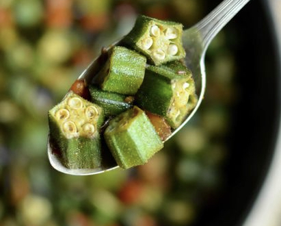

Bindi Masala

Bindi Masala
I posted a video for binidi a few months ago and I just felt like my favorite
dish deserved more. I think these 5 tips are truly so much more important than the
actual recipe, because I know everyone makes it a different way, but I have
the receipe below as well!
Ingredients
- 1lb of okra / bindi, cut in round bite sized pieces
- 1 small red onion
- 1 medium tomato
- 3 green chillies
- 1/2 tsp cumin seeds
- 1/2 tsp coriander powder
- 1/4 tsp turmeric
- 1/2 tsp red chili powder
Instructions
- Add cumin seeds to half a tbsp of hot oil in cast iron pan.
- Once the seeds start "dancing", add onions and green chilies. Saute
on low-medium heat.
- After about a minute, add bindi, tumeric, coriander, and red chili powder.
Mix well (but gently) and leave on medium-high heat until you get a
nice char. Mix to get the other sides occasionally.
- Add a sprinkle of salt, tomatoes, mix well, and cover with a lid for
approx. 4 minutes.
- Once cooked, you can give it one more gentle mix. Serve with some roti
or some dal and rice!